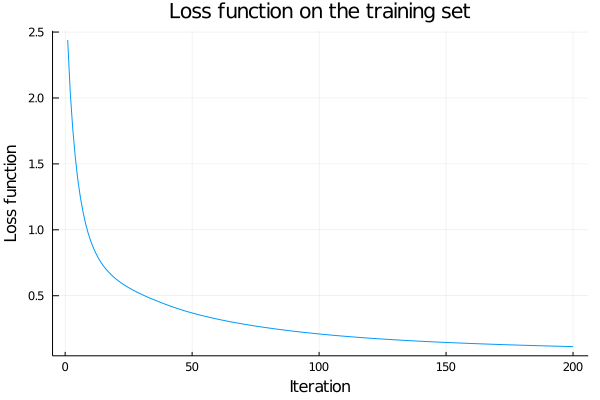

Neural networks
During this lecture, we will train a better classifier for the iris dataset. From the previous lecture, it will differ in several points:
- It will use a neural network instead of the linear classifier.
- It will use all features and not only two.
- It will use all classes and not only two.
Prepare data
We start by loading the iris dataset in the same way as in the last lecture.
using RDatasets
iris = dataset("datasets", "iris")
X = Matrix(iris[:, 1:4])
y = iris.SpeciesThe first exercise splits the dataset into the training and testing sets. Recall that the training set is used to train the classifier, while its performance is evaluated on the testing set. Since the classifier does not see the testing set samples during training, the same performance on the training and testing sets indicates no overfitting.
Write the split function, which randomly splits the dataset and the labels into training and testing sets. Its input should be the dataset X and the labels y. It should have four outputs. Include 80% of data in the training set and 20% of data in the testing set by default.
Hint: use the randperm function from the Random package.
Hint: while y can be assumed to a vector, X is a matrix or a more-dimensional array. Then it is beneficial to use the selectdim function to select subindices along the correct dimension.
Solution:
The function split has two required arguments and two optional arguments. The first optional argument is the dimension dims along which the split is done. The second optional argument is the fraction of the training set. We first check whether the inputs have the same sizes along the correct dimension. Then we determine the number of samples n_train in the training set, create a random permutation i_rand and select the correct number of indices. Finally, we return the data and labels in the training and testing sets.
using Random
function split(X, y::AbstractVector; dims=1, ratio_train=0.8, kwargs...)
n = length(y)
size(X, dims) == n || throw(DimensionMismatch("..."))
n_train = round(Int, ratio_train*n)
i_rand = randperm(n)
i_train = i_rand[1:n_train]
i_test = i_rand[n_train+1:end]
return selectdim(X, dims, i_train), y[i_train], selectdim(X, dims, i_test), y[i_test]
endWe can verify its functionality by calling this function.
X_train, y_train, X_test, y_test = split(X, y)The following exercise normalizes the data. In the previous lecture, we have already normalized the training set. We compute the normalizing constants (mean and standard deviation) for each feature and then apply them to the data. Since the normalization needs to be done before training, and since the testing set is not available during training, the normalizing constants can be computed only from the training set. This also means that the features on the training set have zero mean and unit variance, but features on the testing set may have different mean and variance.
Write the normalize functions as described above. It should have two inputs and two outputs. The keyword argument dims should also be included.
Hint: check the help for the mean function.
Solution:
To compute the mean of X along dimension dims, we can check the help for the mean function to realize that the correct command is mean(X; dims). This is equivalent to mean(X; dims=dims). We do the same for the standard deviation. To normalize, we need to subtract the mean and divide by the standard deviation. Since col_means has the same number of dimensions as X_train, we can use X_train .- col_mean to broadcast col_mean along the dimension mean was computed. We need to use the same normalizing constant for the training and testing sets due to the reasons mentioned above.
using Statistics
function normalize(X_train, X_test; dims=1, kwargs...)
col_mean = mean(X_train; dims)
col_std = std(X_train; dims)
return (X_train .- col_mean) ./ col_std, (X_test .- col_mean) ./ col_std
endTo obtain the normalized datasets, we run the normalize function.
X_train, X_test = normalize(X_train, X_test)The following exercise modifies the labels into a standard form for machine learning.
Write the onehot function that converts the labels y into their one-hot representation. The samples should be along the second dimension. Write the onecold function that converts the one-hot representation into the one-cold (original) representation. Both these functions need to have two arguments; the second one is classes, which equals unique(y).
Write a check that both functions work correctly.
Hint: the one-hot representation for a label has the size equalling to the number of classes. All entries besides one are zeros.
Hint: since the one-hot representation represents probabilities, the prediction is the class with the highest probability.
Solution:
The onehot function first creates an array y_onehot, where the first dimension is the number of classes, and the second dimension the number of samples. Since all but one entries of each column will be zeros, we initialize it by zeros. Then we run a for loop to fill one into each column. We perform the for loop over all classes, but it is also possible to perform it over all columns.
function onehot(y, classes)
y_onehot = falses(length(classes), length(y))
for (i, class) in enumerate(classes)
y_onehot[i, y .== class] .= 1
end
return y_onehot
endThe onecold function finds the index of its maximum value. We repeat this for every column y_col.
onecold(y, classes) = [classes[argmax(y_col)] for y_col in eachcol(y)]Functions onehot and onecold should be inverse to each other. That means that if we call them in succession, we obtain the original input.
classes = unique(y)
isequal(onecold(onehot(y, classes), classes), y)true
Preparing the data is spread over many lines. It is better to combine them into the function prepare_data.
function prepare_data(X, y; do_normal=true, do_onehot=true, kwargs...)
X_train, y_train, X_test, y_test = split(X, y; kwargs...)
if do_normal
X_train, X_test = normalize(X_train, X_test; kwargs...)
end
classes = unique(y)
if do_onehot
y_train = onehot(y_train, classes)
y_test = onehot(y_test, classes)
end
return X_train, y_train, X_test, y_test, classes
endThe standard data representation in linear and logistic regression is that each row (first dimension) is one sample. However, neural networks work with more-dimensional data (three dimensions represent each image). The convention changed, and the last dimension represents the samples. For this reason, we need to transpose the matrix X and use the keyword argument dims=2 to split the dataset along the second dimension. Then the whole procedure for data preprocessing can be summarized in a few lines of code. We specify the seed to obtain the same train-test split.
Random.seed!(666)
iris = dataset("datasets", "iris")
X = Matrix(iris[:, 1:4])
y = iris.Species
X_train, y_train, X_test, y_test, classes = prepare_data(X', y; dims=2)Writing function prepare_data as above has other advantages; we will show them in the exercises. The following example shows that specifying the dimension to split along works as intended.
using LinearAlgebra
Random.seed!(666)
aux1 = prepare_data(X, y; dims=1)
Random.seed!(666)
aux2 = prepare_data(X', y; dims=2)
norm(aux1[1] - aux2[1]')1.6368977293341684e-14
Create the network
We will now construct a simple neural network SimpleNet with the following three layers:
- The first layer is a dense layer with the ReLU activation function.
- The second layer is a dense layer with the identity activation function.
- The third layer is the softmax.
Its parameters will be stored in the following structure.
struct SimpleNet{T<:Real}
W1::Matrix{T}
b1::Vector{T}
W2::Matrix{T}
b2::Vector{T}
endWe will start with initializing the weights stored in the SimpleNet structure.
Write an outer constructor for SimpleNet. Its inputs should be three integers representing the input size of the three layers. All matrices should be initialized based on the normal distribution.
Hint: think about the representation of the dense layer.
Solution:
Since a dense layer computes $Wx+b$, the size of $W$ should be the layer output size times the layer input size. The bias $b$ should be of the size of the layer output.
SimpleNet(n1, n2, n3) = SimpleNet(randn(n2, n1), randn(n2), randn(n3, n2), randn(n3))Out neural network will have five hidden neurons. Therefore, we need to initialize it with the following code.
Random.seed!(666)
m = SimpleNet(size(X_train,1), 5, size(y_train,1))The following exercise computes the network prediction for samples. For a calling simplicity, we will write it as a functor.
Write a functor function (m::SimpleNet)(x) which computes the prediction (forward pass) of the neural network SimpleNet.
Bonus: try to make the functor work for both vectors (one sample) and matrices (multiple samples) x.
Solution:
The dense layer is a linear function z1 = W1*x .+ b1 followed by an activation function. If we assume that x is a vector, then + would work the same as .+ because both W1*x and b are of the same dimension. However, if we want x to be a matrix (each column corresponds to one sample), we need to write .+ because W1*x is a matrix and the vector b needs to be broadcasted to be of the same size. The activation function is the ReLU function which needs to be applied componentwise. The procedure for the second layer is the same, but we need to finish it with the softmax function. If x is a matrix, then z2 is a matrix, and we specify that we want to normalize along the first dimension. If we assume only vector inputs, then specifying the dimension is not necessary.
function (m::SimpleNet)(x)
z1 = m.W1*x .+ m.b1
a1 = max.(z1, 0)
z2 = m.W2*a1 .+ m.b2
return exp.(z2) ./ sum(exp.(z2), dims=1)
endIt is simple now to evaluate the first two samples one the training set.
m(X_train[:,1:2])3×2 Array{Float64,2}:
0.81372 0.384107
0.0205311 0.0324847
0.165749 0.583408Due to the softmax layer, they sum to one and form a probability distribution describing the probability of each class.
Train the network
To train the network, we need to compute the gradients. It is rather complicated. However, when going through the code, it becomes clear that it is just a different form of the chain rule derived in the theoretical part.
function grad(m::SimpleNet, x::AbstractVector, y; ϵ=1e-10)
z1 = m.W1*x .+ m.b1
a1 = max.(z1, 0)
z2 = m.W2*a1 .+ m.b2
a2 = exp.(z2) ./ sum(exp.(z2), dims=1)
l = -sum(y .* log.(a2 .+ ϵ))
e_z2 = exp.(z2)
l_part = (- e_z2 * e_z2' + Diagonal(e_z2 .* sum(e_z2))) / sum(e_z2)^2
l_a2 = - y ./ (a2 .+ ϵ)
l_z2 = l_part * l_a2
l_a1 = m.W2' * l_z2
l_z1 = l_a1 .* (a1 .> 0)
l_x = m.W1' * l_z1
l_W2 = l_z2 * a1'
l_b2 = l_z2
l_W1 = l_z1 * x'
l_b1 = l_z1
return l, l_W1, l_b1, l_W2, l_b2
endThe function returns the function value l and derivatives with respect to all four variables.
Well, for a network with two layers and a loss, we can compute the function value and its derivative in only 16 lines of code.
The previous function grad can compute the gradient for only one sample. Since the objective in training a neural network is a mean over all samples, this mean needs to be included externally. This is NOT the correct way of writing function. However, we decided to present it in the current way to keep the presentation (relatively) simple. When such a simplification is included in the code, we should include a check such as x::AbstractVector to prevent unexpected errors.
When we compute gradients of multiple samples, we obtain an array. Each element is a tuple with five elements from the grad function.
g_all = [grad(m, X_train[:,k], y_train[:,k]) for k in 1:size(X_train,2)]
typeof(g_all)Array{Tuple{Float64,Array{Float64,2},Array{Float64,1},Array{Float64,2},Array{Float64,1}},1}To compute the mean over all samples, we need to use the following obscure function.
mean_tuple(d::AbstractArray{<:Tuple}) = Tuple([mean([d[k][i] for k in 1:length(d)]) for i in 1:length(d[1])])We see that it produces an averaged output of the grad function, where the average is taken with respect to all its inputs.
g_mean = mean_tuple(g_all)
typeof(g_mean)Tuple{Float64,Array{Float64,2},Array{Float64,1},Array{Float64,2},Array{Float64,1}}Having the gradient at hand, we can finally train the network.
Train the network with a gradient descent with stepsize $\alpha=0.1$ for $200$ iterations. Save the objective value at each iteration and plot the results.
Solution:
Now the process is simple. We compute the gradient grad_all, then its mean grad_mean via the already written function mean_tuple. The first value of the tuple grad_mean is the objective; the remaining are the gradients. Thus, we save the first value to an array and use the remaining one to update the weights.
α = 1e-1
max_iter = 200
L = zeros(max_iter)
for iter in 1:max_iter
grad_all = [grad(m, X_train[:,k], y_train[:,k]) for k in 1:size(X_train,2)]
grad_mean = mean_tuple(grad_all)
L[iter] = grad_mean[1]
m.W1 .-= α*grad_mean[2]
m.b1 .-= α*grad_mean[3]
m.W2 .-= α*grad_mean[4]
m.b2 .-= α*grad_mean[5]
end
Prediction
We have trained our first network. We saw that the loss function keeps decreasing, which indicates a good training procedure. Now we will evaluate the performance.
Write a function which predict the labels for samples. Show the accuracy on both training and testing sets.
Solution:
The predicted probabilities are obtained by using the model m. The prediction (highest predicted probability) is obtained by converting the one-hot into the one-cold representation. Finally, the accuracy computes in how many cases the prediction equals to the label.
predict(X) = m(X)
accuracy(X, y) = mean(onecold(predict(X), classes) .== onecold(y, classes))
println("Train accuracy = ", accuracy(X_train, y_train))
println("Test accuracy = ", accuracy(X_test, y_test))Train accuracy = 0.9666666666666667 Test accuracy = 0.9333333333333333
The correct answer is
Train accuracy = 0.9666666666666667 Test accuracy = 0.9333333333333333
We see that the testing accuracy is smaller than the training one. This is quite a common phenomenon which is named overfitting. The problem is that the algorithm sees only the data from the training set. If it fits this data "too perfectly", it cannot generalize into unseen samples (the testing set).